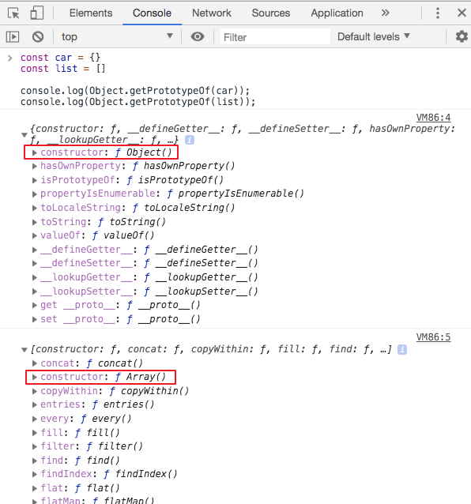
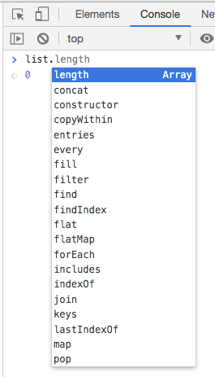

javascript-原型继承
JavaScript 在流行的编程语言中非常独特，因为它使用了原型继承。 让我们找出这意味着什么。
虽然大多数面向对象的语言使用基于类的继承模型，但 JavaScript 基于原型继承模型。
这是什么意思呢？
每个 JavaScript 对象都有一个名为 prototype 的属性，它指向不同的对象。
这个不同的对象就是 对象原型 。
我们的对象使用该对象原型来继承属性和方法。
假设您使用对象字面量语法创建了一个对象：
JavaScript 代码:
1 | const car = {}; |
JavaScript 代码:
1 | const car = new Object(); |
在任何情况下，car 的 prototype(原型) 是 Object ：
如果初始化一个数组，数组其实也是一个对象：
JavaScript 代码:
1 | const list = []; |
这里 list 的 prototype(原型) 是 Array ：
您可以通过检查 __proto__ getter 来验证这一点：
JavaScript 代码:
1 | car.__proto__ === Object.prototype; //true |
我在这里使用 __proto__ 属性，这是历史遗留的非标准的语法，但在现代浏览器中广泛实现。获得原型的更可靠方法是使用 Object.getPrototypeOf(new Object())；例如：
JavaScript 代码:
1 | const car = {}; |
我们可以在控制台中看到，他们的 constructor 属性分别是 Object() 和 Array();

原型中的所有属性和方法对于拥有原型的对象都是可用的：

Object.prototype 是所有对象的基本原型：
JavaScript 代码:
1 | Array.prototype.__proto__ == Object.prototype; //true |
如果你想知道 Object.prototype 的原型是什么，那就没有原型。 这是一种特殊的，独一无二的的对象。(❄️)
您看到的上面的示例是工作中的原型链的示例。
我可以创建一个对象来扩展 Array 的对象，和任何我用它实例化的对象，在其原型链中将包含 Array 和 Object，并从所有祖先继承属性和方法。
除了使用 new 运算符创建对象，或使用对象和数组的字面量语法之外，还可以使用 Object.create() 实例化对象。
3 种方式实例化对象
传递的第一个参数是用作原型的对象：
JavaScript 代码:
1 | const car = Object.create({}); |
您可以使用 isPrototypeOf() 方法检查对象的原型：
JavaScript 代码:
1 | Array.isPrototypeOf(list); //true |
请注意，因为您可以使用以下方式实例化一个数组
JavaScript 代码:
1 | const list = Object.create(Array.prototype); |
在这种情况下，Array.isPrototypeOf(list) 为 false，而 Array.prototype.isPrototypeOf(list) 为 true 。
关于 JavaScript prototype(原型) 的相关知识，可以查看 JavaScript Prototype(原型) 新手指南 详细了解。
6 步 从一个对象, 到封装成函数, 用
Object.create(),prototype,new,class
再看 Object.create()这个是原型继承, 也可不用, 自己 =, 注意constructor自己设置
然后是Object.create()的原理呗, 不支持的浏览器用代替的, 一起记了. 和 new 区别
1 | if (Object.create) { |
看完再看 补充
javascript原型看完了class的是原型的糖, 那么可以知道
extends也是原型糖, 即son.prototype = new F()子的原型指向父的一个实例